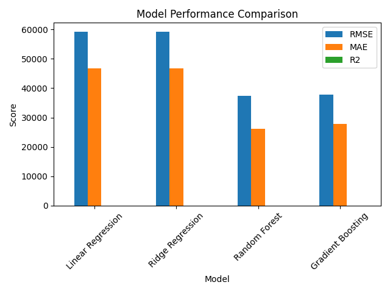
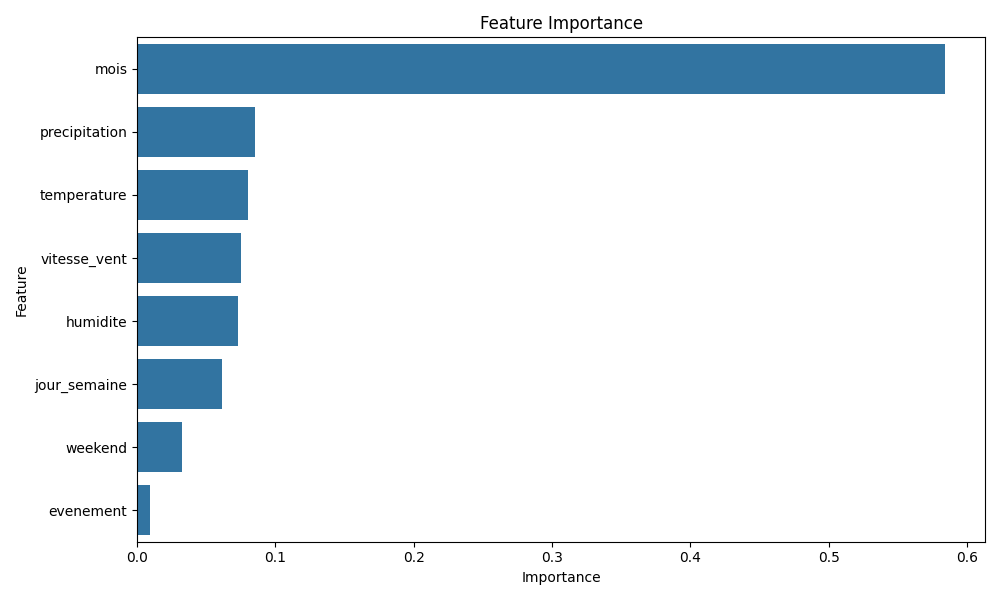

Projet de Machine Learning pour la Prédiction de la Demande Énergétique
| Model | RMSE | MAE | R2 |
|---|---|---|---|
| Linear Regression | 59275.909505 | 46651.907779 | 0.070348 |
| Ridge Regression | 59275.549885 | 46653.446203 | 0.070359 |
| Random Forest | 37465.902704 | 26165.872181 | 0.628605 |
| Gradient Boosting | 37712.320320 | 27781.907155 | 0.623703 |
Score R² du Meilleur Modèle
RMSE Minimum (MW)
MAE Minimum (MW)


Le meilleur modèle a été sélectionné sur la base de plusieurs métriques :
Le modèle sélectionné démontre une performance supérieure car :
Le modèle fonctionne en :
Le modèle prend en compte plusieurs facteurs importants :
Le modèle Random Forest s'est avéré être le plus performant pour prédire la consommation énergétique, avec un score R² de 0.629. Cette performance démontre sa capacité à capturer les relations complexes entre les différentes variables et à fournir des prédictions précises pour la planification énergétique.